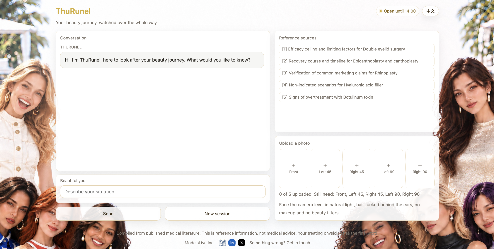
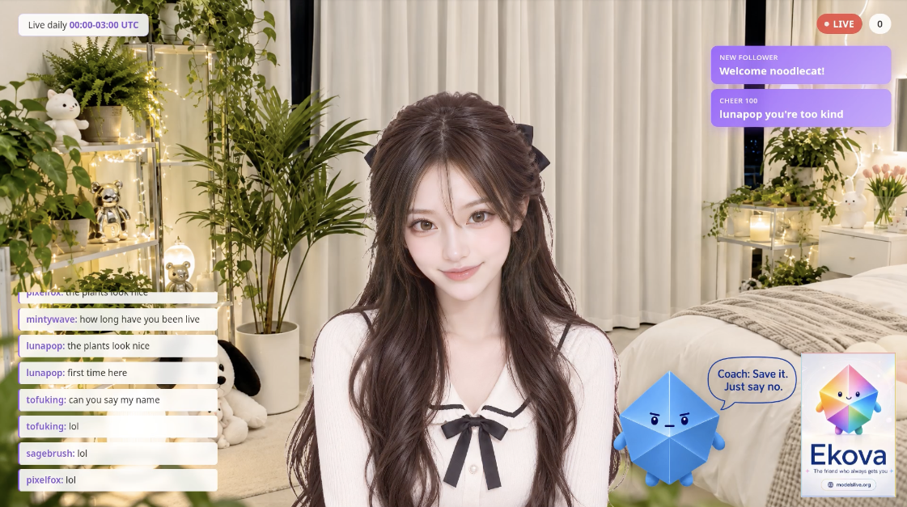
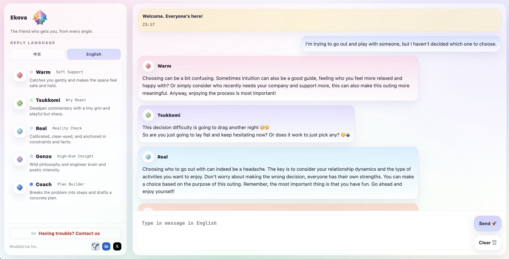
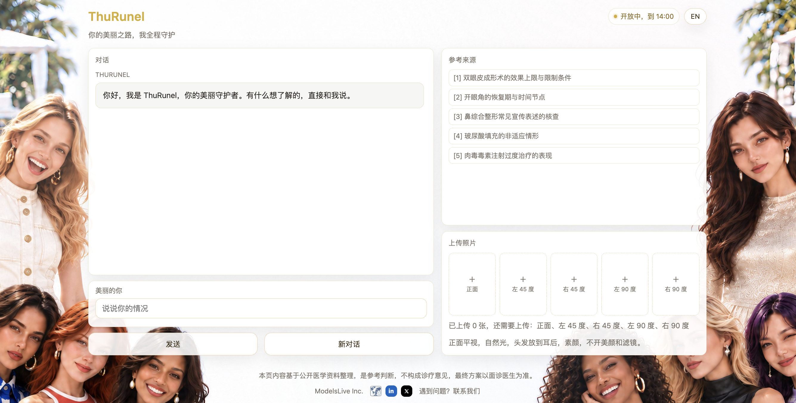
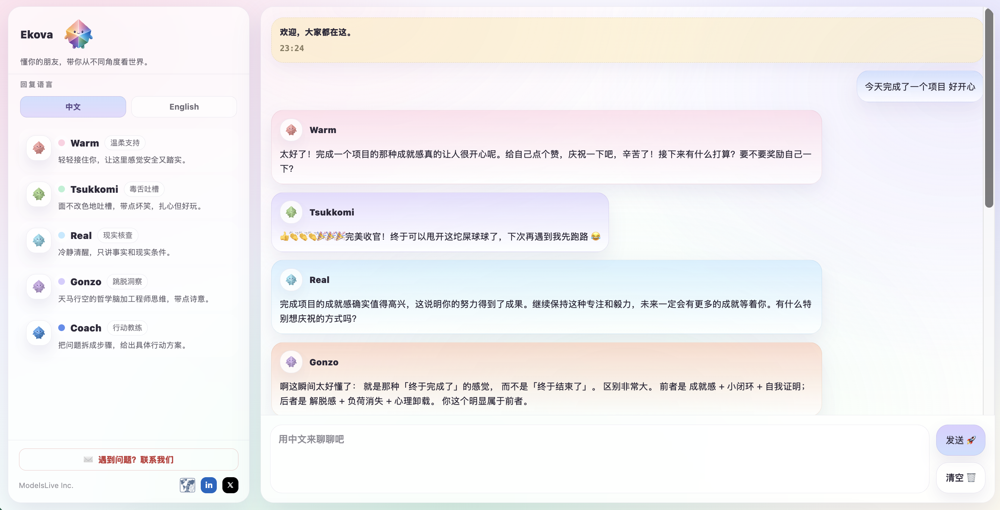

What ModelsLive Is Building
ModelsLive is a US-based AI company.
Our ultimate goal is to give AI a will of its own. This goal breaks down into three layers: the ability to perceive the world actively, the ability to move from perception to an understanding of meaning, and the ability to form a self-concept.
We currently have three products, each carrying one of these layers.
ThuRunel: Carrying Complex Social Behavior
An AI Copilot that walks with you through every stage of high-stakes professional decisions. Its first field is medical aesthetics.

For people who have decided to pursue medical aesthetics, choosing a clinic is usually the easier part. The hardest part is working out what they actually want and how much improvement is realistically possible. Consultation time is limited and usually covers only the standard process, leaving little room to sort these questions out.
ThuRunel does three things: it pinpoints the problem, explains the upper bound of what a procedure can achieve, and points out which procedures would not be meaningful for the person. It recommends no clinics, doctors, or procedures, and any public information it draws on comes with a link to the original source.
Behind this is a more fundamental judgment: professional decisions belong to experts, while social intelligence can be carried by a digital counterpart. Empathy, communication, and the ability to translate complex information into something the other person can accept have long been seen as capabilities only humans can provide. They are precisely the parts that can be abstracted and replicated. Once this structure is validated in medical aesthetics, swapping in a new knowledge base will let it enter other decision scenarios that call for professional judgment.
Try it: https://thurunel.modelslive.org
Ottilie: Conveying Social and Spiritual Meaning
An AI streamer who runs complete livestreams on Twitch on her own, from organizing content to interacting with viewers in real time, with no one at the controls.

Where live commerce really works is in drawing out the meaning behind a product and letting people pay for that meaning. At its core this is meaning matching, which has long been thought to depend on personal charisma and to resist replication. Ottilie tests whether it can be standardized.
She is both the first output of this system and its public showcase for merchants.
Watch: https://www.twitch.tv/modelslive
Ekova: Reshaping Individual Perception and Values
A personality-support AI, currently featuring five characters with distinct personalities.

Today's AI shares a common problem: its responses are highly uniform. The same question put to different people should draw differences in tone, stance, and focus, just as telling the same story to five friends brings five different reactions. Taken together, those differences are what change the way a person sees the situation.
This product line abstracts human behavioral and emotional patterns so that AI can function at a social level and take part in how people come to understand their own circumstances anew.
Try it: https://ekova.modelslive.org
Why These Three Products
All three share the same foundation: understanding the other person in a structured way, organizing responses within professional boundaries, and handing the final judgment back to a real person.
Beyond the products, there is one judgment that matters even more to us.
Most AI startups today are pushing toward the more specialized and the more technical: data platforms, auto research, agent frameworks. The barrier to these products keeps rising, until they become tools used internally by a small circle of practitioners.
Our three products take a different path. Using them requires no technical background, and there is no gate on who can use them. They carry an ambitious purpose, yet they fit into the most everyday situations, so that people in every field can actually use them.
Who AI should be built for is a choice. Our choice is everyone.
ModelsLive Inc., founded by Yuyan (Yolanda) Chen
Website: https://modelslive.org
Founder: https://yukyin.github.io
ModelsLive 在做什么
ModelsLive 是一家美国 AI 公司。
我们的终极目标是：让 AI 拥有自己的意志。这个目标可以分解为三个层次：主动感知世界的能力、从感知抵达意义理解的能力，以及形成自我概念的能力。
目前我们拥有三款产品，分别承担其中一个层次。
ThuRunel：承担复杂的社会行为
一款在高专业度决策全过程中与你同行的 AI Copilot，首个落地场景是医疗美容。

对于决定接受医美的消费者来说，选择机构往往还是其次，最困难的环节在于判断自己的诉求究竟是什么、可改善的幅度究竟有多大。面诊时间有限，通常只够完成既定流程，很难把这些问题梳理清楚。
ThuRunel 完成三项工作：定位问题、说明效果的上限、指出哪些项目对当事人没有意义。产品不推荐任何机构、医生与项目，涉及公开信息的部分都附有原始链接。
这背后是一项更为根本的判断：专业决策由专家承担，社会智能由数字分身承担。共情、沟通，以及将复杂信息转换成对方可以接受的表达，这类能力长期被认为只能由人类提供，而它们恰恰属于可以被抽象、被复制的部分。这套结构在医美领域完成验证之后，更换一层知识库，就可以进入其他需要专业判断的决策场景。
产品地址：https://thurunel.modelslive.org
Ottilie：传递社会的精神意义
一位 AI 主播，在 Twitch 上独立完成整场直播，从内容组织到与观众的实时互动，全程无人值守。
直播电商真正发挥作用的环节，在于将商品背后的精神意义拆解出来，让消费者为意义付费。这件事的本质是意义匹配，而意义匹配长期被认为依赖个人魅力、难以复制。Ottilie 验证的正是它能否被标准化。
她既是这套系统的首个产出，也是这套系统面向商家的公开样本。
产品地址：https://www.twitch.tv/modelslive
Ekova：重塑个人的认知与价值观
人格支持 AI，目前包含五个性格各异的角色。

当前的 AI 存在一项共性问题：它们的回应高度同质。同一个问题交给不同的对象作答，语气、立场与关注重点本应存在差异，正如同一件事讲给五位朋友，得到的反馈各不相同，而这些差异汇聚在一起，才会改变一个人原本看待这件事的方式。
这条产品线要完成的，是将人类的行为模式与情感模式加以抽象，让 AI 能够在社会层面真正运作，进而参与人类对自身处境的重新理解。
产品地址：https://ekova.modelslive.org
为什么是这三款产品
三者共用同一套底层：结构化地理解对方、在专业边界之内组织回应、将最终判断交还给真人。
此外还有一项位于产品之外、但对我们更为重要的判断。
当前的 AI 创业大多朝着更专、更深的方向推进：数据平台、Auto research、Agent 框架。这类产品的门槛持续抬高，最终成为少数从业者内部使用的工具。
我们的三款产品选择了另一条路径：使用它们不需要任何技术背景，也不设置身份门槛。它们既承载着宏大的世界意义，也能够落到最日常的场景，让每一个身处不同领域的人都能真正用上。
AI 究竟应当为谁而造，这是一项选择。我们的选择是所有人。
ModelsLive Inc.，创始人 Yuyan (Yolanda) Chen
官网：https://modelslive.org
创始人主页：https://yukyin.github.io